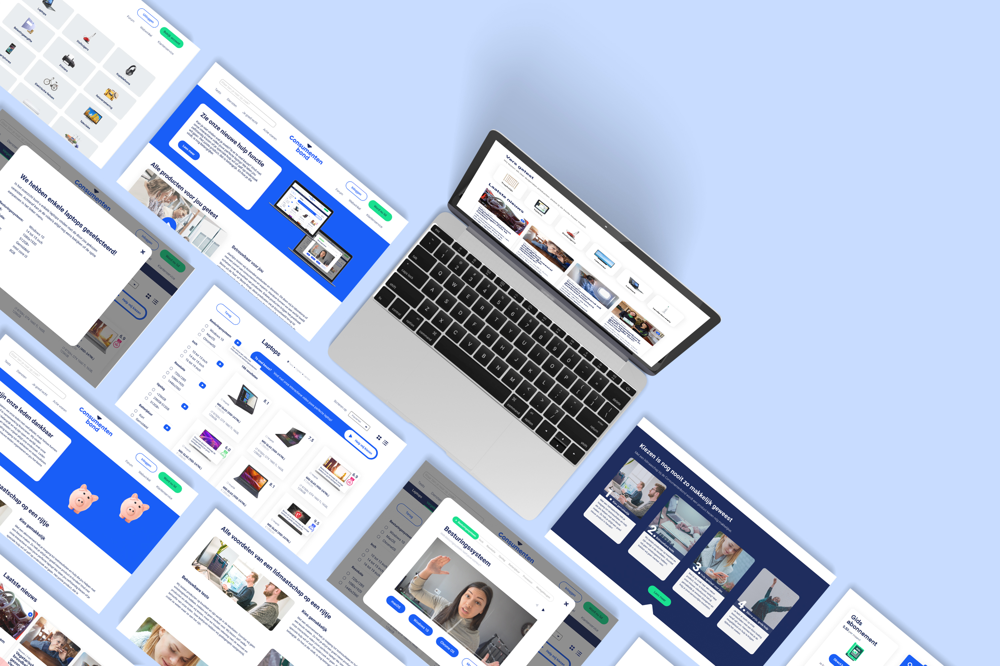

- 
Consumenten bond
Bekijk live versie
User Experience Design
Figma
Online & Offline Posters
Mail Design
Social Media Plan
User Research
Waarom had de Consumentenbond onze hulp nodig?
De Consumentenbond heeft voor haar betaalde leden verschillende pagina’s waarop producten met elkaar vergeleken worden. Meerdere pagina’s met soortgelijke functionaliteit blijkt verwarrend te zijn voor gebruikers. Daarnaast blijkt het dat weinig jongeren worden aangetrokken om De Consumentenbond als hulpmiddel te gebruiken. Hier moet verandering in gebracht worden.
Tijdens de minor "User Experience Design" heb ik de focus gelegd op het maken van een concept dat bij de doelgroep past en de probleemstelling oplost. Met behulp van het onderzoek creeër ik een vernieuwde ervaring voor het keuzeproces van gebruikers. Bij deze ervaring was het van belang dat de huidige functionaliteiten behouden worden. De user experience die de gebruiker ervaart stond tijdens deze minor centraal.
Het resultaat
Met het prototype dat wij gemaakt hebben wordt er een vernieuwde ervaring voor het keuzeproces voor de gebruikers gecreëerd. Uit de testresultaten is gebleken dat de doelgroep het als een handig product ervaart. Om de ervaring compleet te maken, hebben we ook nog extra deliverables gemaakt. Er zijn posters gemaakt om de gebruiker op de hoogte te stellen van de nieuwe functie. De Consumentenbond, de opdrachtgever, was enorm blij met de resultaten die wij geleverd hebben.